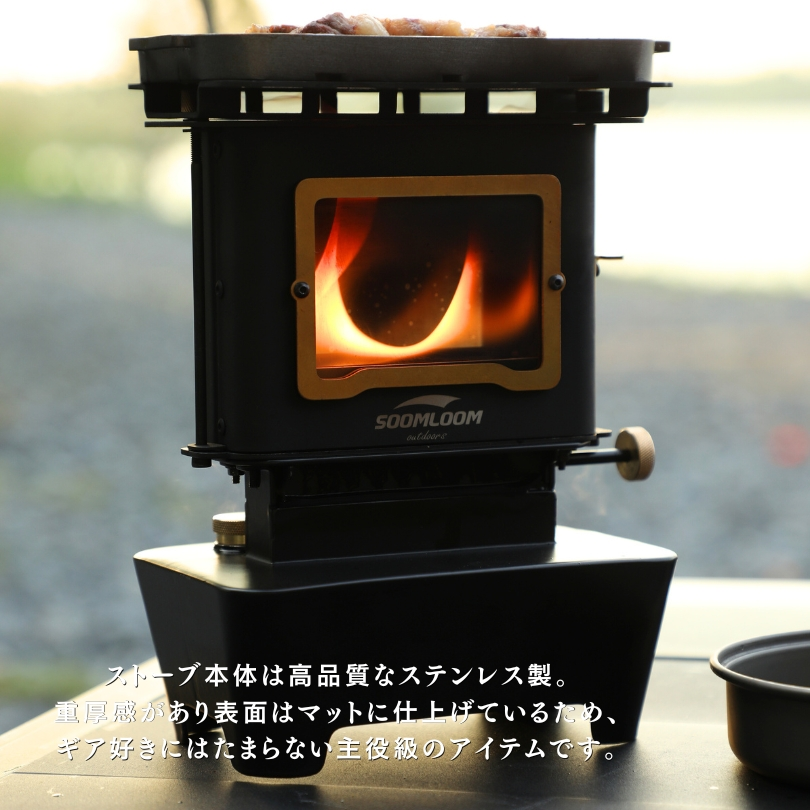
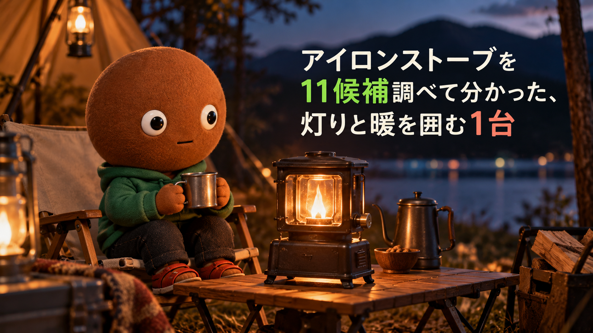
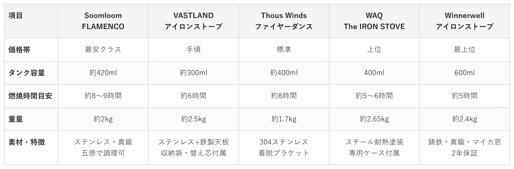

Amazonで見るレトロな見た目だけで選んで、暖まらない・調理できないと後悔したくない人へ
そのアイロンストーブ、
見た目だけで選んでいませんか？
灯り・暖房・簡単な調理まで1台でこなす「アイロンストーブ」11候補を調査。価格・燃焼時間・調理のしやすさ・収納のしやすさ・素材の本格感から、選び方の違う5商品を比較しました。
自分に合うアイロンストーブを探す
この記事はAmazonアソシエイト・プログラムの参加者として、紹介料を得る場合があります（PR）。仕様は調査時点の情報です。
11候補から、選び方の違う5商品に絞りました。まずは気になる1台へ。向いている人・向いていない人と、低評価レビューもまとめています。
11候補を調査
5商品に厳選
低評価レビューも確認済み
結論から先に言うと：
灯り・暖・調理、何を優先するかで1台を。
横にスワイプして、5商品を見比べる
選び方の基準は3つ
調べてわかったのは、基準は3つでした。
1つ目は「燃焼時間（タンク容量）」。給油の頻度に直結するので、どれくらいの時間つけっぱなしにしたいかで選ぶ容量が変わります。
2つ目は「調理のしやすさ」。五徳や天板が取り外し可能かどうかで、ケトルやスキレットの置きやすさ、お手入れのしやすさが変わります。
3つ目は「素材の本格感」。ステンレス製の手頃なモデルから、鋳鉄とマイカ窓を使った本格派まで幅があります。
比較表

価格帯・タンク容量・燃焼時間・重量・素材の比較（価格帯は最安クラス〜最上位の5段階）
Soomloom FLAMENCO
- 最安クラス
- タンク容量約420ml・燃焼時間約8〜9時間
- 重量約2kg・ステンレス+真鍮、五徳で調理可
VASTLAND アイロンストーブ
- 手頃
- タンク容量約300ml・燃焼時間約6時間
- 重量約2.5kg・鉄製天板、収納袋と替え芯が付属
Thous Winds ファイヤーダンスストーブ
- 標準
- タンク容量約400ml・燃焼時間約8時間
- 重量約1.7kg・304ステンレス、着脱式ブラケット
WAQ The IRON STOVE
- 上位
- タンク容量400ml・燃焼時間約5〜6時間
- 重量約2.65kg・専用収納ケース付属
Winnerwell アイロンストーブ
- 最上位
- タンク容量600ml・燃焼時間約5時間
- 重量約2.4kg・鋳鉄+マイカ窓、2年保証
向いてる人
- まず1台、アイロンストーブを試したい人
- ソロキャンプで暖と灯りを兼ねたい人
向いてない人
- 強い火力でがっつり調理したい人
選ぶ決め手とにかく安く試したい人は、これを選べば迷いません。
低評価レビューも見ました
燃料の残量が外から見えるのぞき窓が無く、給油時にあふれやすいという指摘や、灯芯が外れると組み直しがやや手間という声が一部のレビューで見られました。火力自体は中〜弱火向けで、雰囲気を楽しむ用途との相性が良いようです。
参考：ユーザーブログ・レビューを基にした集約
Soomloom FLAMENCOは、まず1
台アイロンストーブを試してみたい人に
最も向く1台です。
タンク容量は約420ml、満タンで約
8〜9時間燃焼できます。
上部の五徳は取り外し可能で、ケトル
やスキレットを載せて直火調理もできます。
向いてる人
- 初めてアイロンストーブを使う人
- 付属品がそろった状態で始めたい人
向いてない人
- 長時間の燃焼をノンストップで求める人
選ぶ決め手初めての1台で失敗したくない人は、これを選べば安心です。
低評価レビューも見ました
本体分離構造のため、ネジ穴などからオイルが伝って漏れることがあるとメーカー自身がSNSで案内しています。また初点火・消火時に少し煙が出るという声もありましたが、換気すれば問題ない範囲だったとのレビューが見られました。
参考：メーカー公式SNS・レビューを基にした集約
VASTLAND アイロンストーブは、初
めてアイロンストーブを使う人に最も
向く1台です。
収納袋・替え芯2本が標準で付属し、耐
熱ガラス窓は約10×7.7cmと大きめです。
鉄製の天板が付属し、簡単な調理や
湯沸かしにも対応します。
向いてる人
- 湯沸かしや簡単な調理も一緒に楽しみたい人
- 軽さも重視したい人
向いてない人
- 強い火力で長時間煮込みたい人
選ぶ決め手調理まで楽しみたい人は、これを選べば使い道が広がります。
低評価レビューも見ました
強めの火力で使うとガラス窓が煤で汚れやすいので、弱め〜中火での使用がすすめられているようです。また窓の留め具がやや硬く、開けにくいと感じたという声も一部で見られました。
参考：ユーザーブログ・レビューを基にした集約
Thous Winds ファイヤーダンス
ストーブは、湯沸かしや簡単な調理も
楽しみたい人に最も向く1台です。
上部のブラケット（五徳）は取り外し可
能で、ケトルの設置や清掃がしやすい構造です。
5商品の中で重量は約1.7kgと
もっとも軽量です。
向いてる人
- 車移動でギアをまとめて運びたい人
- 灯芯や漏斗を別で揃えたくない人
向いてない人
- とにかく本体を軽くしたい人
選ぶ決め手持ち運びの手間を減らしたい人は、これを選べば身支度が楽になります。
低評価レビューも見ました
今回調べた範囲では、目立った低評価の指摘は見当たりませんでした。取り扱い上の注意として、灯芯を下げすぎるとオイルタンク内に落ちることがあるため、公式サイトでは芯の調整幅に気をつけるよう案内されています。
参考：メーカー公式サイト・レビューを基にした集約
WAQ アイロンストーブ The IRON
STOVEは、専用ケースにまとめて持ち
運びたい人に最も向く1台です。
専用収納ケース・灯芯・折り畳み漏斗・
説明書が標準で付属します。
タンク容量は400ml、満タンで約
5〜6時間燃焼します。
向いてる人
- 本格的な素材・作り込みを重視する人
- 長く使う前提で1台を選びたい人
向いてない人
- できるだけ軽い1台を求める人
選ぶ決め手本格派の1台を長く使いたい人は、これがいちばん外しにくいです。
低評価レビューも見ました
窓ガラスが煤で汚れやすいという声が複数見られました。不完全燃焼が主な原因とされ、燃料の量や火加減によって煤のつきやすさが変わるようです。定期的な清掃は他モデル同様に必要と考えておくのが安心です。
参考：ユーザーレビュー・ブログを基にした集約
Winnerwell アイロンストーブは、
本格的な鋳鉄の重厚感を求める人に
最も向く1台です。
タンク容量は600mlと5商品の中で最
大、2年保証と専用ケースが付属します。
琺瑯（ほうろう）塗装で
耐久性にも配慮されています。
11候補をどう絞った？ 調査の経緯を見る
アイロンストーブは、レトロな見た目にひかれて選ぶと、暖まらない・調理できない・すぐ煤で汚れる、といったギャップが起きやすいギアです。正直どれを選べばいいのか迷います。
なので今回、私がアイロンストーブのスペックを調べ比較しました。各商品ごとに、向いてる人・向いてない人も調べているので、自分に合った1台を探してみてください。
11候補から5つに絞り込みました
アイロンストーブは、マイベスト・CAMP HACK・ハピキャンなど複数のメディアで紹介されている、比較的新しいキャンプギアのジャンルです。今回は主要候補11件を調べ、価格帯・付属品・素材・出典の強さが重複しないよう5商品に絞りました。
調査したのはSoomloom・VASTLAND・Thous Winds・WAQ・Winnerwell・mind・BLACK SOLID・Mt.SUMI・MaveRick・EVEREST・CAMVILの11候補です。
mind（mind001）は、パラフィンオイル推奨のヴィンテージデザインが魅力でしたが、価格帯がVASTLANDと近く重複するため見送りました。
BLACK SOLID オイルランタンは、重量約2.68kgとやや重く、他5商品と特徴が近いため見送りました。
Mt.SUMI オーラ ルミは、燃焼時間約18時間と長時間燃焼が魅力でしたが、価格帯が上位帯に集中し重複するため見送りました。
MaveRick FIREWAVEは、交換式プレートが特徴でしたが、実用面での差別化がほかの商品と薄いため見送りました。
EVEREST オールインワン オイルランプストーブは、ソロ〜2人向けサイズが特徴でしたが、仕様が他商品と近いため見送りました。
CAMVIL モグリストーブは、価格帯がSoomloomと近く重複するため見送りました。
番外として、COLONISTA HOT NUMBER（日本製・経年変化を楽しめる鋳鉄モデル）とH7project H7Stove（タンク容量1,200ml・燃焼時間約24時間の大容量モデル）も候補に挙がりましたが、いずれも販売価格の記載が確認できず、比較には使えませんでした。
低評価の商品も見ました
上の11候補とは別に、サクラチェッカーが登録している商品を調べました。個別レビュー本文の真偽までは検証できないため、機械的に確認できた事実だけを書きます。
サクラチェッカーには、VASTLANDとThous Windsの一部ASINページが登録されていましたが、今回の検索範囲では、要注意判定を明確に示す記述までは確認できませんでした。
調べてみて驚いたこと
アイロンストーブはもともと「アイロン（洗濯用の鉄）を温めるための道具」だったという歴史を知り、名前の由来に納得しました。現在はキャンプ用に復刻されたジャンルで、電気を使わずに灯り・暖房・簡単な調理をまかなえる点が、ここ数年で急に注目され始めているようです。
価格帯の幅も想像以上に広く、最安クラスのステンレスモデルから、鋳鉄を使った最上位モデルまで、同じ「アイロンストーブ」という名前で並んでいる点も印象的でした。
迷ったらこれ
ここまで読んでもまだ迷ったら、軽さと調理のしやすさを両立したThous Winds ファイヤーダンスストーブが、外しにくい1台としておすすめです。
Amazonで見る→よくある質問
Q. アイロンストーブって何に使うものですか。
A. 電気を使わず、灯り・暖房・簡単な調理（天板や五徳での湯沸かし・焼き物）の3役をこなす、卓上サイズのオイルストーブです。もともとはアイロンを温めるための道具でしたが、現在はキャンプ用ギアとして復刻されています。
Q. 燃料は何を使えばいいですか。
A. パラフィンオイル（ランプオイル）を推奨しているモデルが多いです。灯油を使うとガラス窓が黒く煤けやすくなるという注意書きがあるモデルもあるので、購入前に対応燃料を確認しておくと安心です。
Q. テント内で使っても大丈夫ですか。
A. 一酸化炭素中毒のリスクがあるため、密閉されたテント内での使用は避け、必ず換気を確保した屋外・半屋外で使うのが基本です。各メーカーも屋外での使用を案内しています。
Q. お手入れは大変ですか。
A. ガラス窓を開けて拭き取るだけのモデルが多く、基本的な手入れは簡単です。ただし煤がつきやすいため、使うたびに窓を拭く習慣をつけておくと、炎の揺らぎをきれいなまま楽しめます。
Q. 初めてでも失敗しにくいのはどれですか。
A. 今回の5商品の中では、収納袋・替え芯が標準で付属するVASTLANDと、専用ケース・灯芯・漏斗が一式そろうWAQが、道具を買い足す手間が少なく扱いやすいです。
こんな記事も書いてます
ミートボーの調査部屋で他の記事も見る（全本）


出典
- マイベスト アイロンストーブのおすすめ人気ランキング：my-best.com
- Arizine 今話題のアイロンストーブ！おすすめアイテム5選と使い方：arinomi.co.jp
- CAMP HACK 復刻した1台3役の火遊び道具「アイロンストーブ」を徹底レビュー：camphack.nap-camp.com
- ハピキャン 話題沸騰中のレトロギア『アイロンストーブ』を徹底解説：happycamper.jp
- VASTLAND公式 アイロンストーブ商品ページ：vastland.co.jp
- WAQ公式 The IRON STOVE商品ページ：waq-online.com
- WINNERWELL Nomad Japan公式 アイロンストーブ：winnerwell-nomad.jp
- サクラチェッカー VASTLAND アイロンストーブ：sakura-checker.jp
- サクラチェッカー Thous Winds アイロンストーブ：sakura-checker.jp
- Amazon.co.jp Soomloom FLAMENCO：amazon.co.jp
- Amazon.co.jp VASTLAND アイロンストーブ：amazon.co.jp
- Amazon.co.jp Thous Winds ファイヤーダンスストーブ：amazon.co.jp
- Amazon.co.jp WAQ The IRON STOVE：amazon.co.jp
- Amazon.co.jp Winnerwell アイロンストーブ：amazon.co.jp